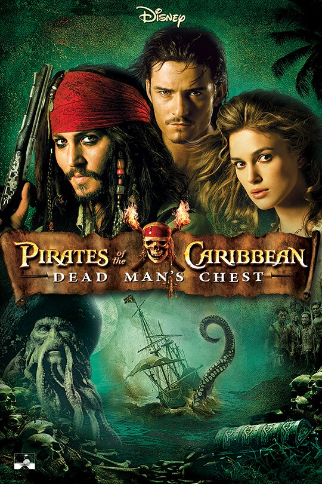
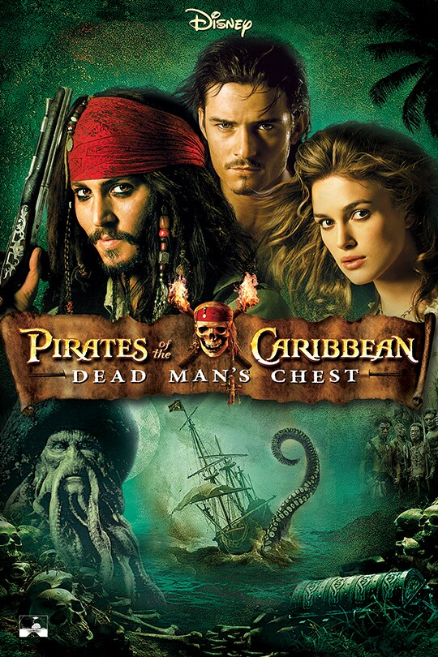

Introduction
George Lucas may be the creative visionary behind iconic film franchises, Star Wars and Indiana Jones, but he is also known as one of the greatest innovators in the industry of film and television (“George Lucas”).
Timeline
In 1975, George Lucas founded the company Industrial Light & Magic, commonly referred to as ILM. Lucas created ILM to work on the first Star Wars movie, creating groundbreaking visual effects to tell an immersive story. ILM continued to work on VFX for films unrelated to Star Wars, becoming the Oscar-winning go-to for any visual effects work in the industry. By the late 1990s, ILM technology was spearheading a new digital age of filmmaking, such as digital compositing and recording. In the last 20 years, ILM has expanded across the world with offices in Vancouver, London, Singapore, and Sydney, to name a few.
 

Works
ILM has worked on VFX for countless films over the last 50 years. In the 1970s, it was just Star Wars: Episode IV – A New Hope. In the 1980s, ILM worked on films such as The Abyss, Raiders of the Lost Ark, Poltergeist, E.T., Back to the Future, and the rest of the Star Wars original trilogy. In the 1990s, ILM worked on Men in Black, Jurassic Park, Forrest Gump, Saving Private Ryan, and Jumanji. In the 2000s, ILM worked on Iron Man, Pirates of the Caribbean, Transformers, and the Star Wars prequel trilogy. In the last decade, ILM has worked on exponentially more films, seemingly present on almost every major blockbuster release (“About,” 2023).
Impact
ILM has paved the way for filmmakers to express any story imaginable and for audiences to experience stunning visuals that transport them to another time and place. This is only made possible by the talented creatives and technical experts that are working behind the scenes to push the capabilities of visual effects further and further (“Industrial Light & Magic,” 2023).